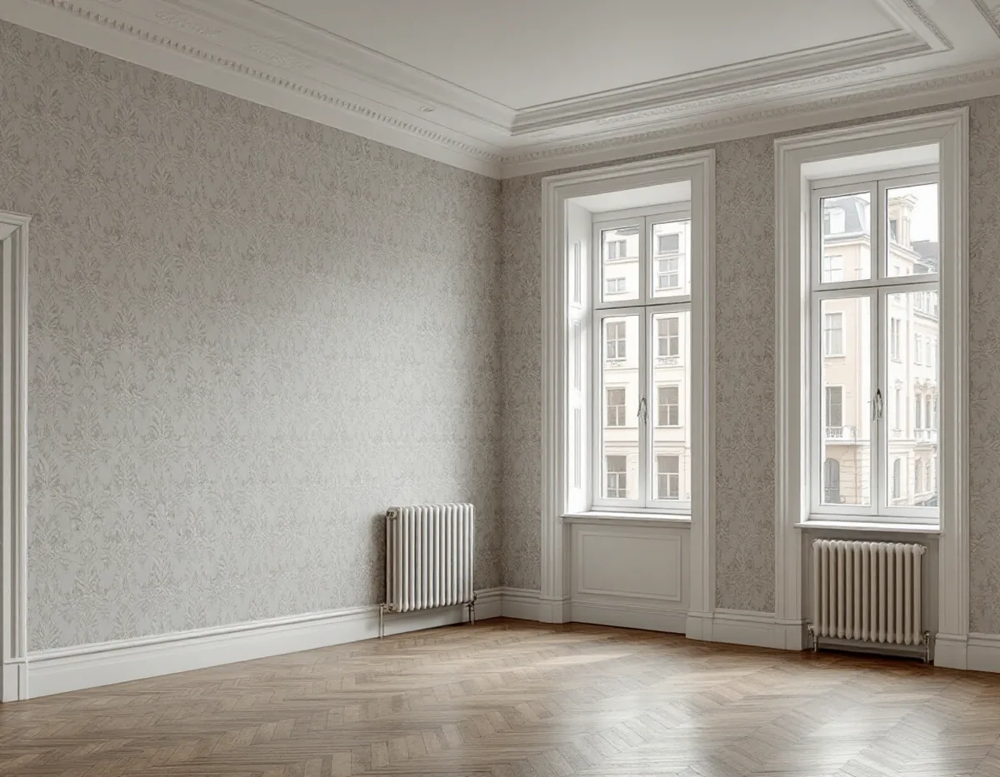
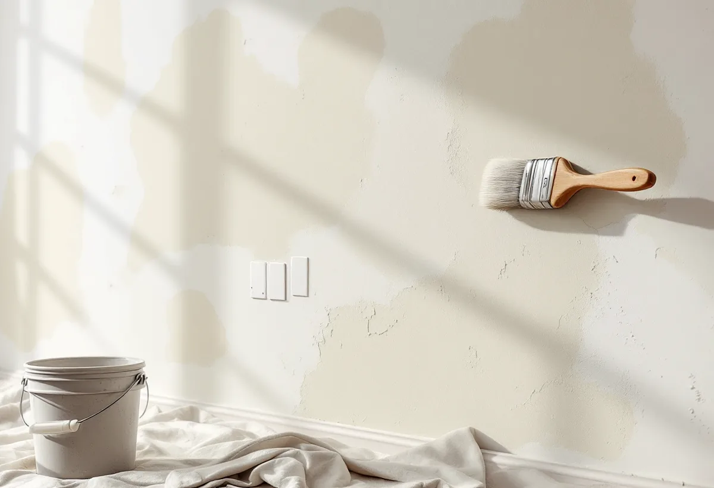

Platsbesök
Vi ser om väggen har kalk- eller lerputs och var den är lagad.
I en lägenhet i stenstadens kvarter eller i Fredhäll kan tapeten sitta på puts. Den kan suga, vara lagad efter nya elledningar eller dölja en gammal dekor. Geal Entreprenad AB tapetserar i bostadsrätter och hyreslägenheter på Kungsholmen och går igenom väggen med dig innan den nya tapeten kommer upp.

Stadens översiktsplan använder begreppet den klassiska stenstaden för den täta kvartersstaden med bebyggelse från 1870 till 1930, med utbredning på Östermalm, Södermalm, Norrmalm och Kungsholmen. Gränsen går ungefär där de slutna kvarteren övergår i friare strukturer, omkring 1930. Planen skriver att inre modernisering i stenstaden prövas enligt varsamhetskraven, och att många hus har gul klassificering eftersom de förändrats sedan de byggdes.
Omkring 1930 började nya stadsdelar byggas efter funktionalistiska ideal i innerstadens utkanter, bland annat i Fredhäll och Kristineberg, med fristående huskroppar och öppna, gröna gårdar. I områdesfakta 2025 har stadsdelen Kungsholm 12 650 bostäder, varav 9 571 bostadsrätter. Fredhäll har 3 830 bostäder, varav 2 219 bostadsrätter, och inga småhus.

I Svenska Byggnadsvårdsföreningens frågespalt beskriver en husägare tegelväggar som invändigt var putsade med kalkbruk och hade varit tapetserade hela tiden. Tapetlagren var bubbliga, släppte mycket lätt och lämnade inga rester på underlaget, och det första lagret var tidningspapper. Föreningen förklarar att putsen suger ur bindemedlet i tapetklistret. Ett sugande underlag ska därför alltid förlimmas, till exempel med utspätt klister, och få torka innan tapeten sätts upp.
Har det dragits ny el i väggarna finns det lagningar runt rören och dosorna. Föreningen skriver att det är svårt att laga puts utan att det syns i strukturen, men att det nog går att få ytan tillräckligt jämn om den ska tapetseras. Den rekommenderar papperstapeter, som kan vädra ut fukt ur väggen, framför helt täta tapeter. Det lönar sig också att ta reda på om det är lerputs: till skillnad från kalkputs löser den sig i vatten, och det nedknackade materialet kan lösas upp och användas igen.
I en lägenhet från 1943 trodde ägaren först att en bård längs väggar och tak var en övermålad tapet, men mönstret satt direkt i putsen. Föreningen svarade att det såg ut att vara spår efter ett dekorativt väggfält eller en inramande bård. Det enda sättet att ta reda på hur det sett ut är att provskrapa försiktigt med skalpell eller en vass kniv. Det kantiga mönstret påminde om meandermönster, som egentligen hör 20-talsklassicismen till, men det finns otaliga varianter även från andra stilepoker, och dekoren kan mycket väl vara från byggåret men även senare. Föreningen föreslog också att fråga grannarna om de har något liknande.
Bostadsrättslagen säger att en lägenhet med särskilda kulturhistoriska värden alltid kräver styrelsens tillstånd för en åtgärd som påverkar sådana värden. Hittar vi dekor under färgen stannar vi därför och visar dig innan vi går vidare.
Ibland ska en ny vägg byggas för förvaring eller ett extra rum. I ett svar om en sekelskifteslägenhet skriver föreningen att det antikvariskt inte finns någon anledning att bygga en ny vägg som förr, till exempel som en kloasongvägg, alltså en rörad och putsad brädvägg, eftersom ytan blir lika slät ändå. Viktigare är att väggens läge och utseende passar lägenhetens karaktär, som formas av golv, fodersnickerier och eventuell takstuck. Tapetdörrar var enligt föreningen inte så vanliga vid den tiden, och pärlsponten hörde köket till.
I en bostadsrätt krävs styrelsens tillstånd för ingrepp i en bärande konstruktion och för annan väsentlig förändring av lägenheten. Det tar du upp med föreningen innan arbetet planeras. När väggen väl står på plats spacklar vi skarvarna och förlimmar spacklingen, så att den nya tapeten får samma sugförmåga över hela ytan. Om färg på väggar och snickerier kan du läsa mer under målare på Kungsholmen.
Vi ser om väggen har kalk- eller lerputs och var den är lagad.
Du stämmer av med styrelsen om arbetet berör mer än ytskiktet.
Lagning, förlimning och tapetsering redovisas var för sig.
Lagningar jämnas till och sugande puts förlimmas och får torka.
Tapeten sätts upp med passning av mönstret mot tak och foder.
Vi går igenom väggarna med dig och lämnar överbliven tapet.
I en bostadsrätt ger tapetsering rotavdrag när arbetet görs innanför bostadens tak, väggar och golv och gäller sådant som du ansvarar för enligt föreningens stadgar, enligt Skatteverket.
Företaget får dra av högst 30 procent av arbetskostnaden. Rotavdraget kan bli högst 50 000 kr per person och år, och högst 75 000 kr om rutavdrag räknas in. Tapet, papp, klister och resor ger inget avdrag. Geal drar avdraget direkt på fakturan.
Hur mycket putsen behöver lagas, om gamla lager ska ner och hur högt det är i tak påverkar mest. Efter ett gratis platsbesök får du ett skriftligt kostnadsförslag.
Fasad, fönster och invändig målning.
Målare i Stockholm →Stambyte, stämmobeslut och 30-talshus.
Badrumsrenovering på Kungsholmen →Föreningens stambyte.
Byggföretag på Kungsholmen →Slätputs på funkishus, lagad utan synliga skarvar.
Fasadrenovering på Kungsholmen →Stenhusen, funkishusen och bygglovet.
Fönsterbyte på Kungsholmen →Fönstret i bostadsrätten, insida och beslag.
Fönsterrenovering på Kungsholmen →Stegljud, golvval och styrelsens tillstånd.
Golvläggare på Kungsholmen →Slipa och lacka golvet i bostadsrätten.
Golvslipning på Kungsholmen →Funkislägenheter, stadgar och ROT i bostadsrätten.
Målare på Kungsholmen →Hela lägenheten från golv till tak.
Totalrenovering på Kungsholmen →